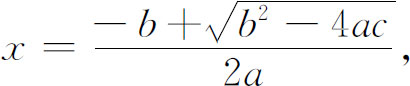

8．代数同几何的关系
我们可以看出，代数在16，17世纪中得到巨大的发展。由于把它同几何捆在一起，故在1500年以前人们认为三次以上的方程是不现实的。当数学家不得不研究高次方程（例如由于辅助计算数字表而采用三角恒等式）或由对三次方程的自然推广而想到研究高次方程时，许多数学家对这种想法感到荒唐可笑。如施蒂费尔在他编辑出版的鲁道夫的《代数》（Coss）中这样说道：“解三次以上的方程，似乎以为竟有什么高于三维的东西……那是违反自然的。”
然而代数终究摆脱了几何思维的束缚。不过代数同几何的关系仍然是复杂的。主要的问题是怎样使人认为代数推理是可靠的，而在16世纪以及在17世纪的大部分时间里，答案是依靠与代数相当的几何意义。帕乔利、卡丹、塔尔塔利亚、费拉里和其他人都给代数法则作出几何证明。韦达也是大都拘泥于几何的。例如他写A3＋3B2A＝Z3（其中A是未知量，而B和Z是常数），为的是使每一项都是三次的，从而都可以代表一个体积。然而我们即将看到，韦达对代数的这种看法和立场是过渡性的。巴罗和帕斯卡确实反对过代数，后来又反对在坐标几何和微积分里用分析方法，因他们觉得代数缺乏可靠依据。
当韦达，其后又有笛卡儿，用代数帮助解几何作图题时，代数依赖于几何的状况开始有点逆转过来了。韦达所著《分析术引论》（1591）中出现的许多代数问题大多数是由于为了解几何题或使几何作图法系统化而解的。韦达把代数应用于几何的典型例子是他所著《分析五篇》中的这样一个问题：已给矩形的面积及其两边之比，求矩形的两边。他设矩形面积为B亩（planum），设大边与小边之比为S比R。令A为较大边，则较小边为RA/S。于是B亩等于（R/S）（A的平方）。两边乘以S得出最后的方程BS＝RA2。然后韦达说明怎样从已知量B及R/S，并依据这方程，用直尺和圆规作出A来。这里解题的思想方法是：若找出所求长度x满足方程ax2＋bx＋c＝0，就知道

于是就可以对a，b和c进行右边代数式里所规定的几何作图步骤，作出x来。
对韦达来说，代数是发现数学真理的特设步骤，它就是柏拉图心目中所认为的分析法（相对于综合法而言）。“分析”这个词是亚历山大的泰奥恩引入的，他把分析定义为这样的步骤：先假定所求的结果成立，然后根据逐步推理，得出一个已知的真理。所以韦达才把他的代数称作分析术。它执行了分析的过程，特别是对几何问题。事实上这也是笛卡儿坐标几何思想的出发点，而他在方程论方面的工作也是从他想利用方程来协助解决几何作图问题而引起的。
代数与几何的相互依赖关系也可从韦达一个学生盖塔尔蒂（Marino Ghetaldi，1566—1627）的工作中看出来。他在所著《阿波罗尼斯著作的现代阐释》（Apollonius Redivivus，1607）的一个篇章中对确定的几何问题的代数解法作了系统研究。他反过来又用几何来证明代数法则。他还用几何方法作出代数方程的根。他死后出版的《数学的分析与综合》（De resolutione et compositione mathematica，1630）一书是详尽讨论这一问题的著作。
我们也发现16世纪和17世纪的数学家承认应该发展代数来代替希腊人所引用的几何方法。韦达看到有关量的相等或成比例的问题，不管这些量是来自几何、物理或商业的，都有可能用代数来处理。因此他对高次方程和代数方法论的研究是毫不迟疑的，他展望未来能出现一种运用符号的关于量的演绎科学。他一方面诚然把代数主要当作是研究几何问题的方便工具，但也有足够广阔的远见，能看到代数有它自身的生命力和意义。邦贝利不用几何而作出过一些能被当时所接受的代数证明。斯蒂文断言凡是几何上所能做到的事都能用算术和代数做到。哈里奥特所著《实用分析术》（Artis Analyticae Praxis，1631）一书把韦达著作中的一些思想观点加以引申加以系统化并使之突出。这书很像一部现代的代数课本，它比先前任何一部代数书更富于分析精神，并在系统运用符号方面向前迈出了一大步。它的流传很广。
笛卡儿也开始看到代数的巨大潜力。他说他是继韦达的未竟之业的。从提供物质世界的知识这个意义上说，他并不认为代数是一门科学。他说几何与力学才确实含有这种知识，他把代数看成是进行推理——特别是关于抽象的和未知的量进行推理的有力方法。他认为代数使数学机械化，因而使思考和运算步骤变得简单，而无需花很大的脑力。这有可能使数学创造变成一种几乎是自动化的工作。
对笛卡儿来说，代数居于数学其他各分支的最前列。它是逻辑的引申，是处理量的一门有用的学科，因而从这个意义上来说，它甚至比几何还具有根本的意义；就是说，在逻辑次序上它领先于几何。因此他想建立一门独立的有系统的代数，而不是一批符号的无计划无依据的堆砌和紧密依赖于几何的一些步骤方法。有一份关于代数论述的提纲，名为《计算》（Le Calcul，1638），是笛卡儿本人或他所领导的人执笔的，那里就把代数作为一门独立的科学来处理。笛卡儿的代数是空洞而没有意义的。它只是一种计算技巧或一种方法，是他寻求方法的总工作里的一部分。
笛卡儿把代数看作是逻辑在处理量方面的一种延伸，这使他想到有可能创立一门范围较广的代数科学，能概括量以及其他概念，并能用于研讨一切问题。甚至逻辑上的原理和方法也可能用符号来表达，而整个体系则可用之于使一切推理过程机械化。笛卡儿把这种想法称作“通用数学”。这一思想在他的著作里是含糊不清的，也没有被他深入探讨。不过他毕竟是第一个把代数放在学术系统基本地位上的人。
对代数的这种观点有充分认识的第一个人是莱布尼茨，他终于把它发展成符号逻辑（第51章第4节）。巴罗也具有这种观点，但范围较窄。他是牛顿的师友，是在牛顿之前担任剑桥大学卢卡斯（Lucas）数学讲座的人。他并不把代数看作是正规数学的一部分，而是把它看成逻辑的一种形式化。他认为只有几何才是数学，而算术和代数是处理那种以符号形式表达出来的几何量的。
不管笛卡儿和巴罗对代数有什么样的哲学观点，也不管他们把代数看成一种普遍的推理科学将会有什么样的潜在可能性，算术和代数技巧的日益广泛的应用所产生的实际效果，是使代数成为独立于几何的一个数学分支。在当时，笛卡儿之既用a2来表示一个长度又表示一块面积这件事是个重大的步骤，因为韦达尚坚持认为二次方只能表示面积。笛卡儿告诉读者注意他用a2作为一个数，并且明确指出他和前人的用法不同。他说x2是适合x2∶x＝x∶1的一个数量。同样，他在《几何》中说一些线段的乘积可以是线段，这里他思想上指的是所涉及的数量，而不是古代希腊人所指的几何线段。他明确认识到代数计算是不依赖于几何的。
沃利斯受了韦达、笛卡儿、费马和哈里奥特的影响，在使算术和代数脱离几何描述的工作上比他们这些人走得更远。他在所著《算术》（1685）一书中用代数方法推导出欧几里得《原本》第五篇中的所有结论。他不再把x和y的代数方程限定为齐次方程，因为人们之所以持有这种想法，是由于这类方程来自几何问题的缘故。他看到代数具有简明易懂的特点。
牛顿虽然喜爱几何，但我们在他所著的《普遍的算术》中第一次看到他肯定算术与代数（相对于几何而言）具有根本的重要性，当时笛卡儿与巴罗则仍赞成以几何作为基本数学分支。牛顿为创立微积分需要而且也使用了代数语言，而微积分也以代数方法来处理最为适宜。所以就代数之所以能居于几何之上这件事来说，微积分学方面的需要是有决定意义的。
到1700年之际，代数已达到能够自身站稳脚跟的地步了。唯一的困难是没有地方容纳它。自从埃及与巴比伦时代以来，直观和边做边改的办法提供了一些实用法则；重新阐释希腊几何代数法的结果又提供了其他一些法则；16，17世纪中，部分地在几何意义的指引下进行的独立的代数研究工作，得出了许多新的结果。但代数的逻辑基础，足以同欧几里得提供给几何者相媲美的，却并不存在。鉴于当时欧洲人已充分认识到严格的演绎式数学该有什么要求，所以我们对当时人对此事普遍地缺乏关心（除了帕斯卡和巴罗的反对以外）感到惊异。
数学家怎么来判断哪些东西是正确的呢？正整数和分数的性质是如此直截了当地来自我们对事物集合的经验，以至于它们看来像是不言而喻似的。甚至欧几里得也不能给《原本》中那些讨论数论的篇章提供逻辑基础。随着数系中添入了新型的数，人们就把那些用之于正整数和分数的运算法则也施行到新的数上，并以几何意义作为方便的向导。字母一旦被人采用之后，它们就是数的化身，因而可以像数那样来处理。比较复杂的代数技巧，可通过卡丹所用的那种几何论证，或者通过对特例的单纯归纳，而获得似乎合理的依据。但所有这些做法在逻辑上都不能令人满意。而且即使求助于几何，也不能给负数、无理数和复数提供逻辑依据，并且，举个例说，也不能用来合理地说明：若一多项式当x＝a时为负，而当x＝b时为正，则它必在a与b之间取零。
然而数学家满怀喜悦和信心百倍地着手运用新的代数。事实上，沃利斯肯定说代数步骤的合法性并不逊于几何步骤。数学家没有认识到他们即将进入一个新的时代，那时归纳、直观、边做边改的办法和物理论点将要作为证明的基础。给数系和代数建立逻辑基础的问题是个难题，其难度远远超过17世纪的任何数学家所能认识到的程度。数学家能那样大胆轻信甚至直率而不拘泥于逻辑却倒是一件好事，因为自由创造必须走在正规化和逻辑基础的前面，而数学创造的最伟大的时代已经到来了。
参考书目
Ball，W．W．R．：A Short Account of the History of Mathematics，Dover（reprint），1960，Chap．12．
Boyer，Carl B．：History of Analytic Geometry，Scripta Mathematica，1956，Chap．4．
Boyer，Carl B．：A History of Mathematics，John Wiley and Sons，1968，Chaps．15-16．
Cajori，Florian：Oughtred，A Great Seventeenth Century Teacher of Mathematics，Open Court，1916．
Cajori，Florian：A History of Mathematics，2nd ed．，Macmillan，1919，pp．130-159．
Cajori，Florian：A History of Mathematical Notations，Open Court，1928，Vol．1．
Cantor，Moritz：Vorlesungen über Geschichte der Mathematik，2nd ed．，B．G．Teubner，1900，Johnson Reprint Corp．，1965，Vol．2，pp．369-806．
Cardan，G．：Opera Omnia，10 vols．，1663，Johnson Reprint Corp．，1964．
Cardano，Girolamo：The Great Art，trans．T．R．Witmer，Massachusetts Institute of Technology Press，1968．
Coolidge，Julian L．：The Mathematics of Great Amateurs，Dover（reprint），1963，Chaps．6-7．
David，F．N．：Games，Gods and Gambling：The Origins and History of Probability，Hafner，1962．
Descartes，René：The Geometry，Dover（reprint），1954，Book 3．
Dickson，Leonard E．：History of the Theory of Numbers，Carnegie Institution，1919-1923，Chelsea（reprint），1951，Vol．2，Chap．26．
Fermat，Pierre de：Œuvres，4 vols．and Supplement，Gauthier-Villars，1891-1912，1922．
Heath，Sir Thomas L．：Diophantus of Alexandria，2nd ed．，Cambridge University Press，1910；Dover（reprint），1964，Supplement，Secs．1-5．
Hobson，E．W．：John Napier and the Invention of Logarithms，Cambridge University Press，1914．
Klein，Jacob：Greek Mathematical Thought and the Origin of Algebra，Massachusetts Institute of Technology Press，1968．Contains a translation of Vieta's Isagoge．
Knott，C．G．：Napier Tercentenary Memorial Volume，Longmans Green，1915．
Montucla，J．F．：Histoire des mathématiques，Albert Blanchard（reprint），1960，Vol．1，Part 3，Book 3；Vol．2，Part 4，Book 1．
Mordell，J．L．：Three Lectures on Fermat's Last Theorem，Cambridge University Press，1921．
Morley，Henry：Life of Cardan，2 vols．，Chapman and Hall，1854．
Newton，Sir Isaac：Mathematical Works，Vol．2，ed．D．T．Whiteside，Johnson Reprint Corp．，1967．This volume contains a translation of Arithmetica Universalis．
Ore，Oystein：Cardano：The Gambling Scholar，Princeton University Press，1953．
Ore，Oystein：“Pascal and the Invention of Probability Theory，”Amer．Math．Monthly，67，1960，409-419．
Pascal，Blaise：Œuvres complètes，Hachette，1909．
Sarton，George：Six Wings：Men of Science in the Renaissance，Indiana University Press，1957，“Second Wing．”
Schneider，I．：“Der Mathematiker Abraham de Moivre（1667-1754），”Archive for History of Exact Sciences，5，1968，177-317．
Scott，J．F．：A History of Mathematics，Taylor and Francis，1958，Chaps．6 and 9．
Scott，J．F．：The Scientific Work of René Descartes，Taylor and Francis，1952，Chap．9．
Scott，J．F．：The Mathematical Work of John Wallis，Oxford University Press，1938．
Smith，David Eugene：History of Mathematics，Dover（reprint），1958，Vol．1，Chaps．8-9；Vol．2，Chaps．4 and 6．
Smith，David Eugene：A Source Book in Mathematics，2 vols．，Dover（reprint），1959．
Struik，D．J．：A Source Book in Mathematics，1200-1800，Harvard University Press，1969，Chaps．1-2．
Todhunter，I．：A History of the Mathematical Theory of Probability，Chelsea（reprint），1949，Chaps．1-7．
Turnbull，H．W．：James Gregory Tercentenary Memorial Volume，Bell and Sons，1939．
Turnbull，H．W．：The Mathematical Discoveries of Newton，Blackie and Son，1945．
Vieta，F．：Opera mathematica（1646），Georg Olms（reprint），1970．
————————————————————
(1) π这个记号是琼斯（William Jones）第一个采用的（1706）。
(2) Acta Erud．，1712，167-169＝Math．Schriften，5，387-389．
(3) 第二版，1728，p．193。
(4) Acta Erud．，1702＝Math．Schriften，5，350-361．
(5) Rem和rebus是res一字的文法变形。
(6) 英译名Introduction to the Analytic Art，1591＝Opera，1-12。
(7) Five Books of Analysis，1593＝Opera，41-81．
(8) 英译名：On the Review and Correction of Equations，Opera，82-162。
(9) Comm．Acad．Sci．Petrop．，6，1732/1733，217-231，pub．1738＝Opera，（1），6，1-19．
(10) Proc．London Math．Soc．，1，1865，1-16＝Math．Papers，2，498-513．
(11) Mém．de l'Acad．des Sci．，Paris，5，1729，83-166．
(12) Œuvres，2，206．
(13) Œuvres，1，340；3，271．
(14) Œuvres，2，333-335．
(15) Œuvres，2，333-335；3，312-313．
(16) 费马，Œuvres，3，457-480，490-503。